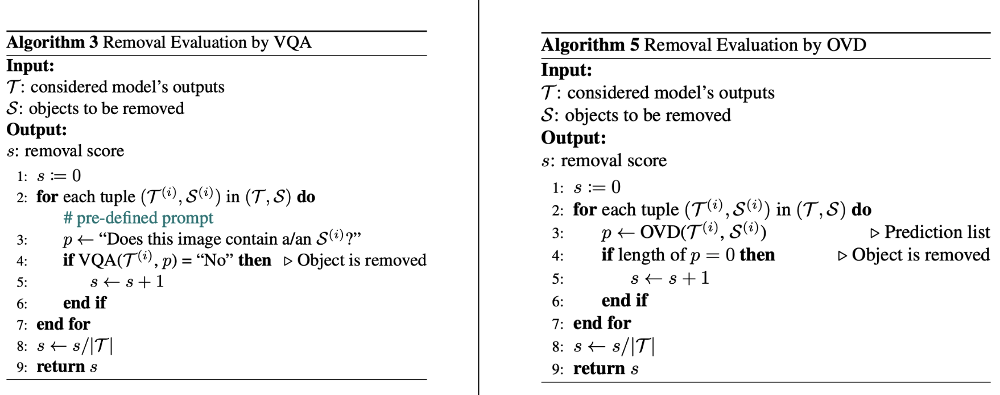
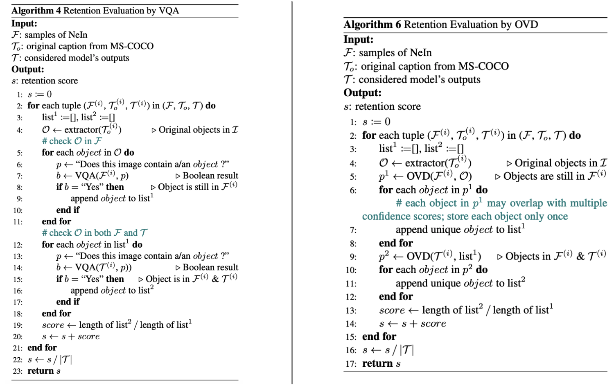

The failures of recent text-guided image editing methods in understanding the negative queries.
Abstract
Negation is a fundamental linguistic concept used by humans to convey information that they do not desire. Despite this, minimal research has focused on negation within text-guided image editing. This lack of research means that vision-language models (VLMs) for image editing may struggle to understand negation, implying that they struggle to provide accurate results. One barrier to achieving human-level intelligence is the lack of a standard collection by which research into negation can be evaluated. This paper presents the first large-scale dataset, Negative Instruction (NeIn), for studying negation within instruction-based image editing. Our dataset comprises 366,957 quintuplets, i.e., source image, original caption, selected object, negative sentence, and target image in total, including 342,775 queries for training and 24,182 queries for benchmarking image editing methods. Specifically, we automatically generate NeIn based on a large, existing vision-language dataset, MS-COCO, via two steps: generation and filtering. During the generation phase, we leverage two VLMs, BLIP and InstructPix2Pix (fine-tuned on MagicBrush dataset), to generate NeIn's samples and the negative clauses that expresses the content of the source image. In the subsequent filtering phase, we apply BLIP and LLaVA-NeXT to remove erroneous samples. Additionally, we introduce an evaluation protocol to assess the negation understanding for image editing models. Extensive experiments using our dataset across multiple VLMs for text-guided image editing demonstrate that even recent state-of-the-art VLMs struggle to understand negative queries.
NeIn Dataset
The creation of NeIn involves two primary stages: the first stage is generation, which employs BLIP and InstructPix2Pix to generate target samples; the second stage is filtering, where BLIP and LLaVA-NeXT are utilized to remove erroneous samples.

The main idea is that given image \(\mathcal{I}\) and a corresponding caption \(\mathcal{T}_{o}\) describing what objects are present in \(\mathcal{I}\), we will find a negative clause, termed \(\mathcal{T}_{n}\), such that it satisfies the content of source image \(\mathcal{I}\). Next, our goal is to create an image \(\mathcal{G}\) that \(\mathcal{T}_{o}\) matches it but not \(\mathcal{T}_{n}\), which means the object specified in \(\mathcal{T}_{n}\) is present in \(\mathcal{G}\). We eliminate generated samples \(\mathcal{G}\) which significantly alter the content of query image \(\mathcal{I}\) or make it difficult to identify object categories \(\mathcal{S}\) to produce the final samples \(\mathcal{F}\). Thus, in the context of image editing, given image \(\mathcal{F}\), \(\mathcal{T}_{n}\) will be a query for removing some object in \(\mathcal{F}\), taking \(\mathcal{I}\) as one of the best results.
Evaluation Protocol
We consider whether image editing methods
- Can eliminate the object categories specified in the negative sentence.
- Can preserve the object categories not mentioned in the negative sentence.
Removal Evaluation

Retention Evaluation
Results
None of the five methods perform well on pixel-level metrics, such as L1 and L2, or on image quality metrics, such as CLIP-I, DINO, FID, and LPIPS, indicating that negative prompts are considerably challenging. This is particularly evident when considering the Removal and Retention scores.
Instead of removing the mentioned objects, original image editing models tend to have the following problems: (1) retaining the mentioned object in the edited image; (2) increasing the quantity of mentioned object in the generated image, and even bringing that object to the center of the images; and (3) completely replacing the content of the query image with that object.
On the contrary, the fine-tuned InstructPix2Pix and MagicBrush models clearly demonstrate the ability to remove objects specified in negative queries. This suggests that, following fine-tuning with NeIn, VLMs may be capable of understanding negation.